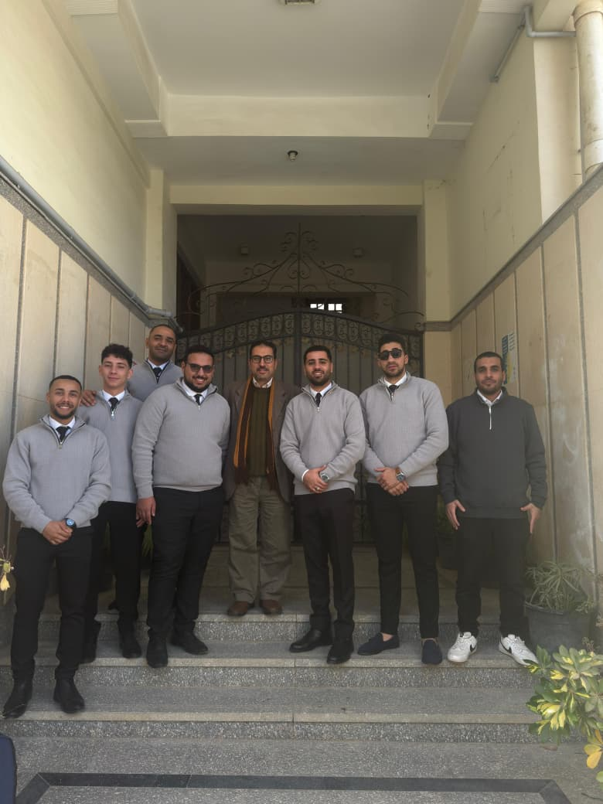
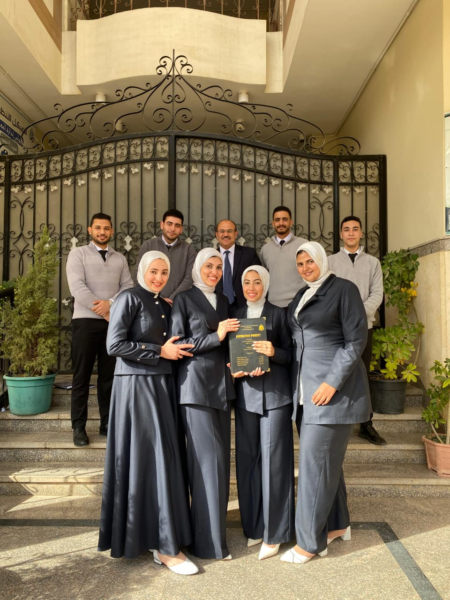
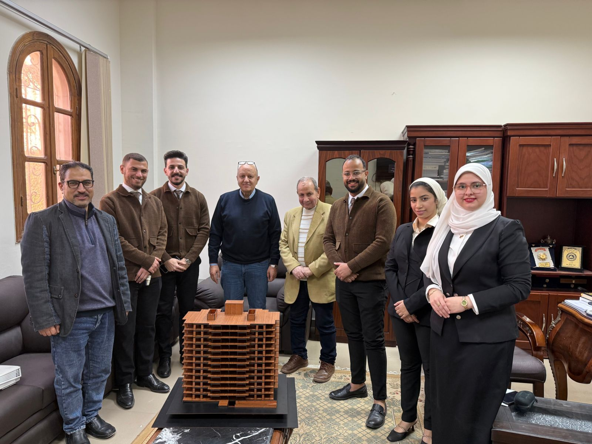
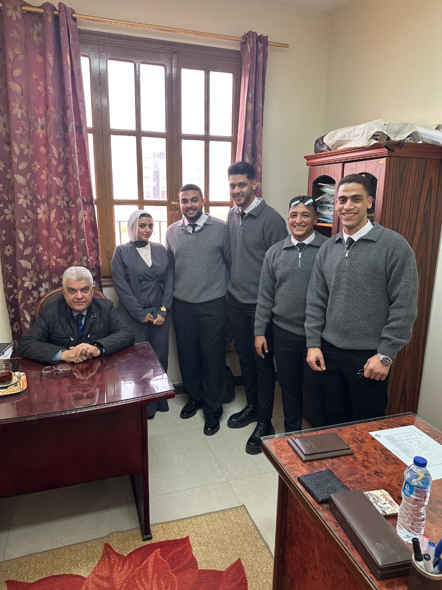

مشاريع تخرج قسم الهندسة المدنية الفصل الدراسي الأول 2025-2026
تم يوم السبت الموافق 14 من فبراير 2026 مناقشة مشاريع التخرج المقدمة
من مهندسي الفرقة الرابعة/ الهندسة المدنية وكانت المشروع تحت عنوان :
" تصميم المنشآت المعدنية"
لجنة المناقشة:
أ.د. أشرف اسماعيل الصباغ – مشرف المشروع و عضوًا في هيئة التدريس بقسم الهندسة المدنية
د. رفيق وديع صليب – عضو هيئة التدريس بقسم الهندسة المدنية
د. أحمد محمد أبوسعده – عضو هيئة التدريس بقسم الهندسة المدنية
تم يوم السبت الموافق 14 من فبراير 2026 مناقشة مشاريع التخرج المقدمة من مهندسي الفرقة الرابعة/ الهندسة المدنية وكانت المشروع تحت عنوان : "هندسة الطرق والمطارات"
لجنة المناقشة:
د. دينا محمد الطحان - مشرف المشروع و عضوًا هيئة التدريس بقسم الهندسة المدنية
د. أحمد محمد أبوسعده - عضو هيئة التدريس بقسم الهندسة المدنية
د. سارة محمد الهادي عضو هيئة التدريس بقسم الهندسة المدنية
تم يوم السبت الموافق 14 من فبراير 2026 مناقشة مشاريع التخرج المقدمة من مهندسي الفرقة الرابعة/ الهندسة المدنية وكانت المشروع تحت عنوان : "هندسة المساحة "
لجنة المناقشة:
أ.د.م. محمد السيد جبر - رئيس قسم الهندسة المدنية
د. أيمن محمد هلال - مشرف المشروع و عضوًا هيئة التدريس بقسم الهندسة المدنية
د. دينا محمد الطحان - عضو هيئة التدريس بقسم الهندسة المدنية
تم يوم السبت الموافق 14 من فبراير 2026 مناقشة مشاريع التخرج المقدمة من مهندسي الفرقة الرابعة/ الهندسة المدنية وكانت المشروع تحت عنوان : " إدارة المشروعات "
لجنة المناقشة:
د .إيلين عبده الدرس - مشرف المشروع و عضوًا هيئة التدريس بقسم الهندسة المدنية
د .هاني عطالله حشيش - عضو هيئة التدريس بقسم الهندسة المدنية
د. حمدي عبد العاطي - عضو هيئة التدريس بقسم الهندسة المدنية
تم يوم السبت الموافق 14 من فبراير 2026 مناقشة مشاريع التخرج المقدمة من مهندسي الفرقة الرابعة/ الهندسة المدنية وكانت المشروع تحت عنوان : " مقاومة المواد"
لجنة المناقشة:
د/ نسرين زكريا العوادلي - مشرف المشروع و عضوًا هيئة التدريس بقسم الهندسة المدنية
د. حمدي عبد العاطي - عضو هيئة التدريس بقسم الهندسة المدنية
د. هاني عطالله حشيش - عضو هيئة التدريس بقسم الهندسة المدنية
تم يوم السبت الموافق 14 من فبراير 2026 مناقشة مشاريع التخرج المقدمة من مهندسي الفرقة الرابعة/ الهندسة المدنية وكانت المشروع تحت عنوان : " تصميم منشآت الخرسانة المسلحة "
لجنة المناقشة:
أ.د. خالد فوزي خليل - مشرف المشروع و عميداً للمعهد
د. حمدي عبد العاطي - مشرف المشروع و عضواً هيئة التدريس بقسم الهندسة المدنية
د. هاني عطالله حشيش - عضو هيئة التدريس بقسم الهندسة المدنية
تم يوم السبت الموافق 14 من فبراير 2026 مناقشة مشاريع التخرج المقدمة من مهندسي الفرقة الرابعة/ الهندسة المدنية وكانت المشروع تحت عنوان : " هندسة الطرق والمرور والنقل "
لجنة المناقشة:
أ.د.م. محمد السيد جبر - رئيس قسم الهندسة المدنية
د. أميرة محمود الشوربجي - مشرف المشروع و عضوًا هيئة التدريس بقسم الهندسة المدنية
د. أحمد أبوسعدة - عضو هيئة التدريس بقسم الهندسة المدنية
تم يوم السبت الموافق 14 من فبراير 2026 مناقشة مشاريع التخرج المقدمة من مهندسي الفرقة الرابعة/ الهندسة المدنية وكانت المشروع تحت عنوان : " تصميم اساسات المنشأت "
لجنة المناقشة:
أ.د.م. محمد السيد جبر - رئيس قسم الهندسة المدنية
د. هاني عطالله حشيش - مشرف المشروع و عضوًا هيئة التدريس بقسم الهندسة المدنية
د. رفيق وديع صليب - عضو هيئة التدريس بقسم الهندسة المدنية
تم يوم السبت الموافق 14 من فبراير 2026 مناقشة مشاريع التخرج المقدمة من مهندسي الفرقة الرابعة/ الهندسة المدنية وكانت المشروع تحت عنوان : " تحليل الانشاءات "
لجنة المناقشة:
أ.د.م. محمد السيد جبر - رئيس قسم الهندسة المدنية
د. هاني عطالله حشيش - مشرف المشروع و عضوًا هيئة التدريس بقسم الهندسة المدنية
د. حمدي عبد العاطي - عضو هيئة التدريس بقسم الهندسة المدنية
صور من المناقشات

هندسة الطرق والمطارات

مقاومة المواد

هندسة الطرق والمرور والنقل

تصميم المنشآت المعدنية

هندسة المساحة

تصميم أساسات المنشآت

إدارة المشروعات

تصميم منشآت الخرسانة المسلحة

تحليل الانشاءات